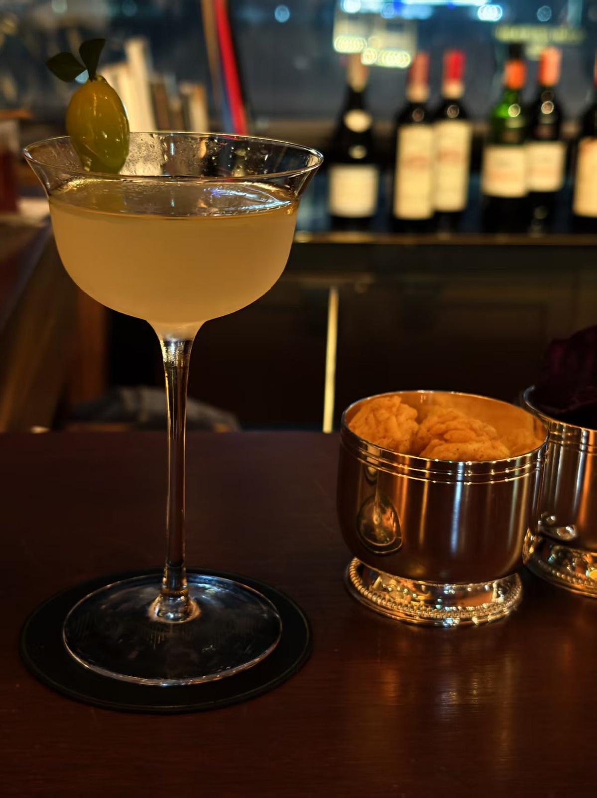

Lennon's
到 Lennon's 之前，已经在曼谷喝了一下午。没有计划，沿街一家一家喝过去，喝到微醺，坐突突车去了市中心。Rosewood 的电梯坐到顶楼，先到的是一间黑胶唱片房，一整面墙的黑胶，看完再往里走，才是酒吧。

来之前就知道它是 Asia's 50 Best Bars 2026 的第七名，期待不低。店是高空酒店吧的样子，吊灯压得很低，酒柜靠着落地窗，窗外就是曼谷的夜景。鸡尾酒用音符命名，酒单装在一台老式胶卷相机里，递过来自己拨着看。这个做法不多见。

点了一杯 MAN DO-TINI，金酒打底。入口是芒果，咽下去慢慢返上来一股糯米饭味，一杯酒喝出了完整的芒果糯米饭。这个设计有意思。酒偏烈。

下酒菜点了炸鸡翅和一个苹果干邑甜品，都一般。
整体没有期待中那么好。吃的普通，夜景也算不上惊艳。好在黑胶房是实打实的好，店里的氛围也舒服，酒有记忆点。下次来曼谷还会去，但不用专程。
那晚是一个人，从街头喝到楼顶，挺自在的。